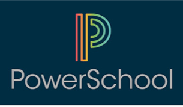

Project Summary:
Business Objective:
To pull automatically generated student email addresses from our MS SQL data warehouse and push into production PowerSchool instances in multiple states.
What I Built:
A ruby script that connects to our data warehouse using an ActiveRecord adapter for SQL server, dynamically queries student records, and converts them into the expected format with a custom JSON serializer. Then it uses Faraday HTTP client to make a call to the PowerSchool API (one per instance in CA and TN) to request a token for authentication. Once authenticated, it sends the JSON request body to the API and returns a response set of success/error messages which are logged locally. The program is integrated into our SSIS integration job server using a nice little PowerShell script to dynamically call the ruby script for each state’s data.
TL;DR: Wrote a ruby script that syncs 15,000+ student emails between a data warehouse and production PowerSchool servers in mutliple states on a daily basis.
Made With:
- Ruby
- PowerSchool API
- MS SQL
- Stored procedure
- Custom views
- PowerShell
- SSIS
Code Samples:
Select methods from the API class demonstrating how the program connects to the PowerSchool API and updates student emails.
# @oauth is a class variable that stores the configuration file secrets
# not exposed here for obvious reasons
private
def connect
# open HTTP connection
Faraday.new(:url => @oauth['url'],:ssl => {:verify => false}) do |faraday|
faraday.request :url_encoded # form-encode POST params
faraday.adapter Faraday.default_adapter # make requests with Net::HTTP
end
end
private
def access_token
result = connect.post do |request|
request.url "/oauth/access_token"
request.params['client_id'] = @oauth['id']
request.params['client_secret'] = @oauth['secret']
request.params['grant_type'] = 'client_credentials'
end
# return token from JSON result
JSON.parse(result.body)['access_token']
end
public
def update_student_emails(body) # takes JSON as the body param
# POST request body of student emails to PowerSchool API
result = connect.post do |request|
request.url "/ws/v1/student"
request.options.timeout = 3000 # open/read timeout in seconds
request.options.open_timeout = 10 # connection open timeout in seconds
request.headers['Accept'] = 'application/json'
request.headers['Content-Type'] = 'application/json'
request.headers['Authorization'] = "Bearer #{access_token}"
request.body = body
end
# Return human readable JSON result
parsed = JSON.parse(result.body)
pretty = JSON.pretty_generate(parsed)
endRuby method for seralizing student emails from SQL to JSON. The PowerSchool Student API expects JSON in a non standard JSON format. That is why custom serialization is needed.
See PowerSchool API Documentation under “Update Students > Request Body Example”
def self.serialize_student_emails(state)
# client_uid is the PowerSchool ID and id is the DCID
studentArray = []
connect('production')
query = sanitize_sql_array(
["SELECT * FROM dbo.StudentEmails WHERE State = ?", state]
)
connection.select_all(query).each do |record|
studentArray << {
'client_uid' => record['client_uid'],
'action' => 'UPDATE',
'id' => record['id'],
'contact_info' => {'email': record['email']}
}
end
studentHash = {'students' => {'student' => studentArray}}
# return as JSON body
studentHash.to_json
endPowerShell script: ssms_job.ps1
# This is run from an SSMS job task step
$erroractionpreference = "Stop"
try {
Set-Location 'C:\powerSchoolApi\app'
# Ruby executable location called from Rails Installer
$RUBY = 'C:\RailsInstaller\Ruby2.2.0\bin\ruby.exe'
& $RUBY 'application.rb'
}
catch {
throw 'The application encountered an error. See logs for further explanation.'
exit 1
}